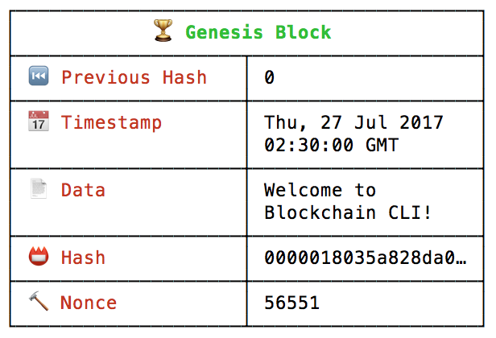
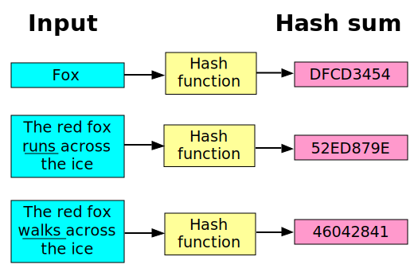
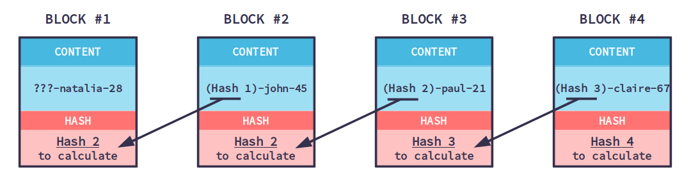
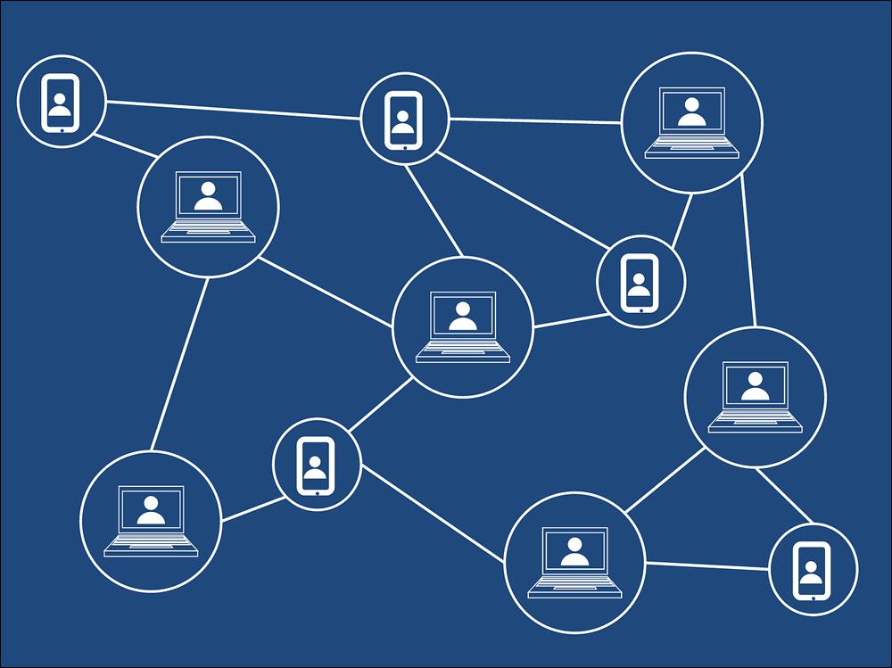
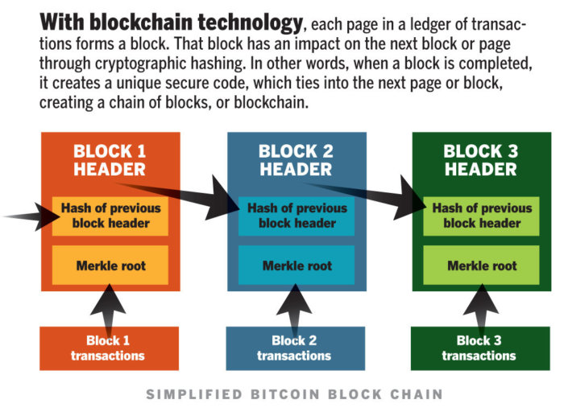
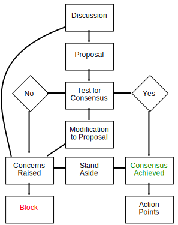

Blockchain


How does it work?
- A transaction must occur.
- That transaction must be verified.
- That transaction must be stored in a block.
- That block must be given a hash.

Where Is the Blockchain Stored?



- Decentralization
- Blockchain is working 24 hours a day, seven days a week
- Privacy
- Security
- Transparency
Disadvantage of Blockchain
- Banks
- Cryptocurrency
- Healthcare
- Smart Contracts
- Supply Chains
- Voting